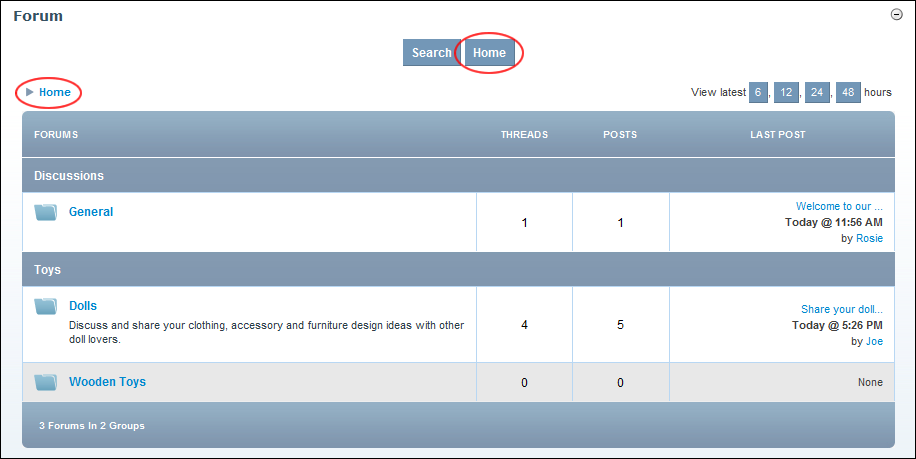

Go to Forum Home Page
How to go to the home page of the Forum module.
Click the
Home
link located in the top left corner of the breadcrumb - OR - Click the
Home
link located top center above all forum groups.

Go to Forum Home